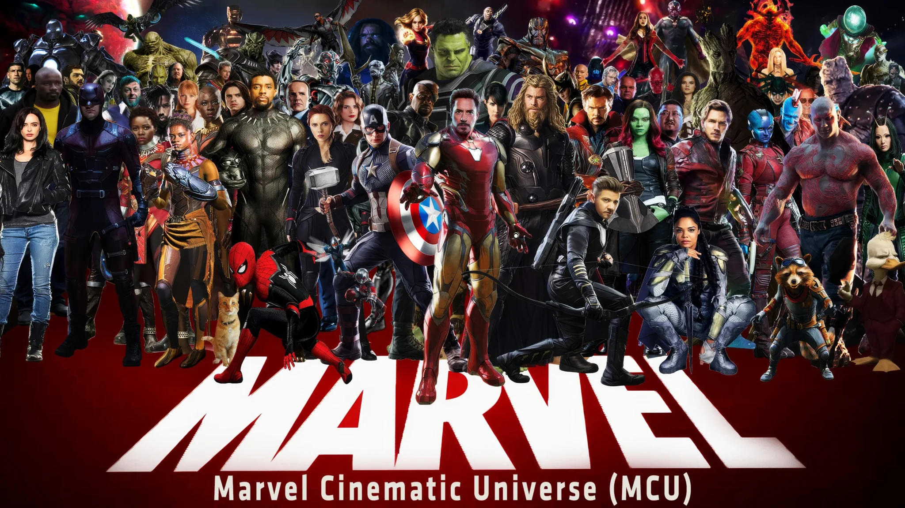

The Architecture of Marvel Studios

When Kevin Feige and Jon Favreau rolled the dice on Iron Man in 2008, the post-credits sting featuring Samuel L. Jackson's Nick Fury discussing the "Avengers Initiative" sparked a completely new storytelling era. This was the start of the most iconic run in cinematic history. This brought the legendary comic heroes created by Stan Lee and Jack Kirby into live action. Every branch balances distinct comic mythos against overarching studio continuity, all officially chronicled on the Marvel Official Website.
Core Sectors of the Franchise
The MCU's narrative canvas splits into distinct thematic domains, each managing fundamentally different scales of stakes:
- Street-Level Grit: Centered in Hell's Kitchen and Queens, Wilson Fisk's syndicate brawls with Matt Murdock(he is a very good lawyer by the way) and Peter Parker(people might have forgot him but he's still a friendly neighbour).
- Espionage & Geopolitics: S.H.I.E.L.D., the Department of Damage Control, and remnants of the Red Room manipulate global treaties like the Sokovia Accords.
- Cosmic Operations: The Nova Empire on Xandar, and the remnants of Knowhere, exploring the fallout of galactic despots.
- Mystic & Occult: The Kamar-Taj(Doctor Strange's Taj Mahal) sorcery networks and Eldritch magic traditions navigating dark dimensions, the Mirror Dimension, and chaos magic curses like the Darkhold(It's Legendary pull now).
The Multiverse Saga Breakdown
Following the Infinity Saga, the franchise systematically dismantled timeline safeguards through concrete narrative checkpoints:
- Sylvie slaying He Who Remains at the Citadel at the End of Time, unleashing unpruned branching timelines(oops moment i guess).
- The multiversal breach in New York that fractured boundaries between Sony legacy continuities and Earth-616(this gave us the OG comeback of 2 orginal spiderman).
- The manifestation of dimensional incursions—cataclysmic collisions where alternate universes annihilate one another.(We all know Avenders are Doomed)
- The arrival of the Council of Kangs(not anymore) and the eventual emergence of Victor von Doom to assert absolute control over reality.
MCU Faction
| Sector | Some Characters |
|---|---|
| Street | Daredevil, Spider-Man, Kate Bishop |
| Espionage | Captain America, Bucky Barnes, Val |
| Cosmic | Guardians, Captain Marvel, Thor |
| Mystic | Doctor Strange, Wong, Dormammu, Mephisto |
| Multiversal | Fantastic Four, Victor von Doom |
The Road to Avengers: Doomsday

Avengers: Doomsday, directed by Anthony and Joe Russo. Robert Downey Jr. plays Victor von Doom, a sovereign who shares Tony Stark's likeness, forcing heroes like Peter Parker to face a ruthless mirror of their former ally. The character combines polymath science, dark magic, and Latverian diplomatic immunity, a mix drawn from Jonathan Hickman's 2015 comic run. For the comic origins, see the Doctor Doom Reference Guide.
Conclusion
The MCU has had its ups and downs, but its biggest advantage has always been the sheer variety of its sandbox. Bringing street heroes, cosmic warriors, and sorcerers together to face Doom is exactly what comic event books do best. If the Russo Brothers can pull this balance off, Doomsday will deliver the appointment theater experience Marvel fans have been waiting for. Are you ready for the battle world?